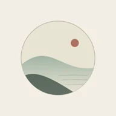
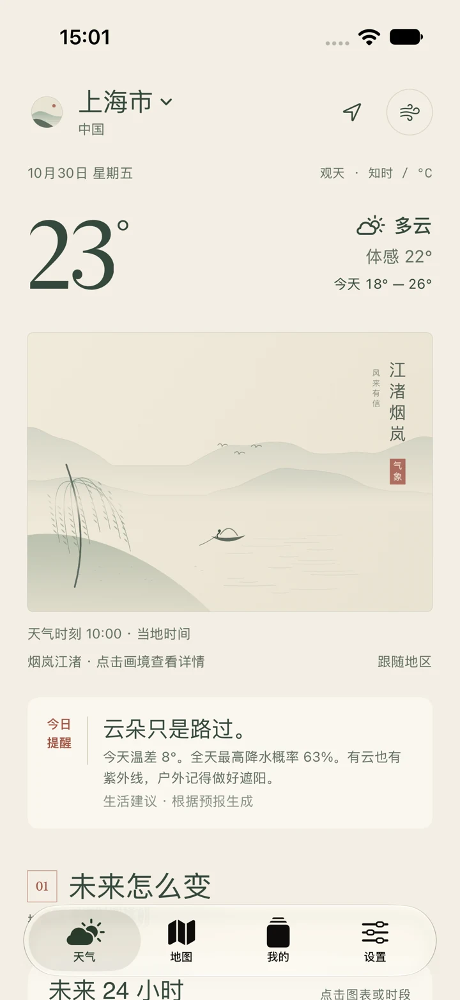
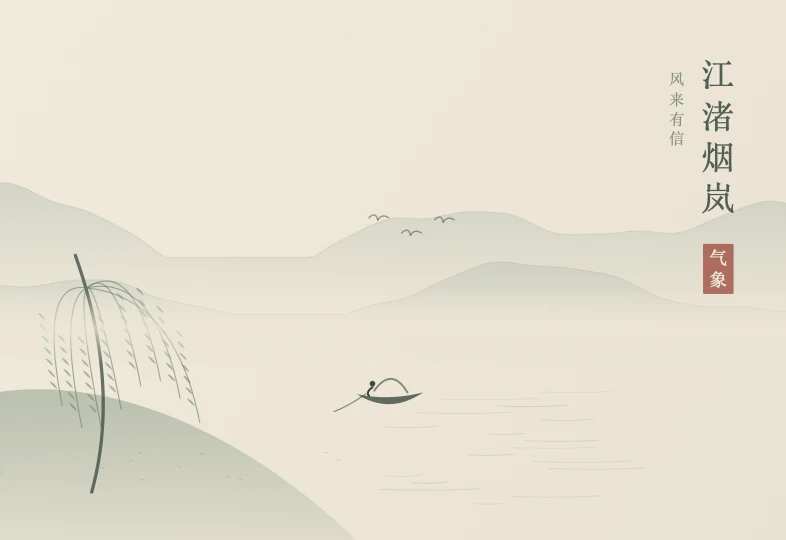
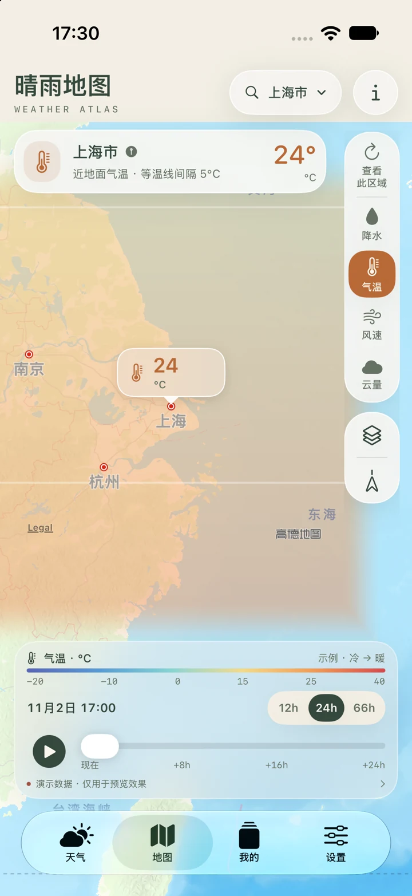

此刻冷暖，心中有数
当前温度、体感与空气质量，连同日出日落和生活提示，把出门前关心的事放在一起。

气象岛WEATHER ISLAND为日常，留一方晴空
窗外有晴雨，心中有山水。
清晰的天气预报，遇见东方画境的诗意，
让每一天的出发，多一分从容。
山水入怀，晴雨有时。WEATHER, WITH A LITTLE POETRY.

50 幅原创画境 / 逐小时与多日预报 / 三种桌面小组件
01 / 日常有数
先看懂天气，再安排生活。
从眼前的温度，到接下来几天的晴雨，一眼明了。
当前温度、体感与空气质量，连同日出日落和生活提示，把出门前关心的事放在一起。
沿时间查看逐小时变化，浏览多日预报。带不带伞、添不添衣，都多一份参考。
收藏不同城市，在日常居住的地方与牵挂的远方之间切换。天气变化，随时查看。
02 / 山水可居
取意宋韵，落笔日常。
从烟岚江渚到荷风莲影，
让一方屏幕，也有山水的呼吸。

一叶轻舟，
驶入今日的好风景。
十组主题 · 五十幅原创
把喜欢的风景，留在每天。
此处精选五幅画境 · 更多风景，在 App 中慢慢相遇
03 / 放眼远方
将天气铺在地图上。从一个地点，看到一片区域；沿着时间轴，了解接下来天气的变化。
地图展示预报数据；降水为小时累计预报，
不提供实时雷达或分钟级雨停判断。

气象岛 · 山水入怀，晴雨有时。
回到晴空之下